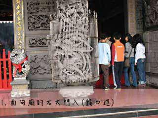

我 要 拜 拜
- 如何拜拜
- 擲筊介紹
- 詩籤介紹
第一步：入廟禮儀
進入廟宇參拜，首先必須遵守「龍進虎出」的原則，也就是從廟宇座向的龍邊（我們行進方向的右邊）進入，而從廟宇座向的虎邊離開，如果還是搞不清楚，那就記得跟捷運一樣靠右邊走就沒錯囉！一般廟宇當中多有指示「參拜方向」，只要順著參拜方向前進即可。
 |
|
第二步：朝天祭拜
進廟參拜一般就遵從廟裡的指示順序，記得首先對外先拜天公，從天公爐開始插第一炷香，接著拜主神，再其次是配祀神。如果廟宇當中沒有指示牌，那麼，只要記得「天上天公」這句俗諺，面朝廟外先拜天公準沒錯，然後再拜廟宇正殿所供奉的主神。因為神明的座向跟我們是相反的，所以要以左尊右卑的原則來祭拜。如果廟宇有後殿，進入後殿，再從我們的右到左（神明座向的左至右）一一祭拜配祀神就可以囉！
拜拜小常識
香該如何拿？「香氣沈沈應乾坤，燃起清香透天門」這兩句話道盡了清香三炷的作用。隨著裊裊香煙，信者心中的祈願隨之傳遞到神明的處所，是以在拜拜的程序當中，香佔了相當重要的地位。而該如何正確地拿香呢？點燃香之後，必須以雙手持香，以右手持香、左手護持。拜拜之時，香的高度要在鼻端，以身體鞠躬三拜，而非手持香上下揮動拜拜。插香的時候要用左手，這也是陰陽的概念，左手為陽右手為陰，所以用左手插香、手心朝向自己才正確。此外，盡量將香插到香爐的中央插正，不宜歪斜也盡量避免插到香爐最邊緣，以免香頭傷及後來插香者的手。如果要插三炷香，第一炷香先插中央，其次為龍邊（面向神明的右邊），再其次為虎邊（面向神明的左邊）。
擲筊：是一種道教信仰問卜的儀式。「筊杯」是一種占卜工具，是世俗之人所用以與神明指示的工具。「筊杯」有時會倒過來稱之為「杯筊」。多用竹、木等材質做成，兩個為一對，呈立體的新月形狀，每一個稱為一「支」，並分有正反面，凸起部份稱為「陰面」（也就是反面），平面的部份則稱為「陽面」（也就是正面）。儀式內容是將兩個約掌大的半月形，一面平坦、一面圓弧凸出之筊杯擲出，以探測神鬼之意。
一陽一陰（一平一凸） 稱之為「聖杯」（或「聖筊」）表示神明認同，或行事會順利。但如祈求之事相當慎重，多以連三次聖杯才做數。 |
|
兩陽面（兩平面） 稱之為「笑杯」（或「笑筊」），表示神明一笑，還未決定要不要認同，行事狀況不明，可以重新再擲筊請示神明或再次說清楚自己的祈求。 |
|
兩陰面（兩凸面） 稱之為「陰杯」、「無杯」（或「怒筊」），表示神明不認同，行事會不順，可以重新再擲筊請示。 |
在民間信仰中，擲茭有幾個約定俗成的禮儀如下：
1.擲筊通常以三次為限。
2.擲筊前需在神靈面前說明自己姓名、歲數、生日、戶籍地址、現居住址和請示的事情。
3.擲筊前雙手要合住一對筊杯，往神明面前參拜之後，才能鬆手讓筊杯落下。
是神明告訴信眾的話，千年不變，話裡有話。好像是大富翁遊戲裡面的『機會』一樣， 提示我們未來的處境與契機。求籤與解籤是神人之間的務實溝通技術，『神明有在‧求籤願信‧解籤能達』三項齊備就能順利。籤詩技術絕非一蹴可及但無門派與奧秘可言，解籤不限宗教信仰來歷背景只要開闊視野認真歷練就可以精進，正心誠意的解籤學習者會獲得神明提攜進階，傳統的解籤者常是未及功名的落第書生，拋下自身好惡而純以公道真意為神人雙方提供幕後支援。
常見的籤詩種類
雷雨師一百籤 |
此本籤詩，名稱為雷雨師，此名之由來可以由第一百籤中得知，是由天仙雷雨師所降，其餘相關資料，尚待筆者查考，不過這並不重要，重要的是雷雨師籤詩在許多寺廟廣泛使用，尤以關帝廟、城隍廟多採用此本籤詩，故有人稱它為關帝籤、城隍籤，而且雷雨師籤詩也可以在其他主神之寺廟見到。臺北行天宮、新竹城隍廟等採用，是百首級籤詩中最普遍的籤詩，而且也是最符合生活實用籤詩 |
|---|---|
六十甲子籤 |
六十首的幾種籤詩中，在台灣最主要的就是這一冊六十甲子籤，主要常見於媽祖廟，也有天公廟（玉皇上帝廟）採用此組籤詩，也可以搭配三枚金錢卦卜出上、下卦求籤。採用六十首籤詩的各寺院宮廟也都會添加籤首、籤王、頭籤等三者之一，組合成六十一首籤詩，所以完整的六十甲子籤一共有六十三首。 |
觀音一百籤 |
常見於觀音寺，例如台北市龍山寺，在百首籤詩中普遍性僅次於雷雨師一百籤，但是這本籤詩在各地差異很大。 |
| 保生大帝六十籤 | 台北保安宮 的這本六十首籤詩 ，保生大帝的宮廟似乎沒有比較常用的特定籤詩。 |
澎湖天后宮一百籤 |
澎湖天后宮、台南大天后宮、鹿港天后宮 、台北關渡宮、澎湖龍德宮（位於講美，主祀 玉皇三公主）均採用此本籤詩。 |
註生娘娘三十籤 |
除了指點生育之外，也指點訴訟勝負之道。 |